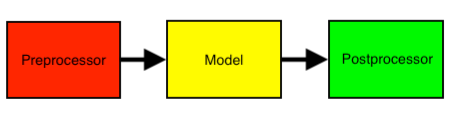

Sensitive Data Detection with the Labeler¶
In this example, we utilize the Labeler component of the Data Profiler to detect the sensitive information for both structured and unstructured data. In addition, we show how to train the Labeler on some specific dataset with different list of entities.
First, let’s dive into what the Labeler is.
What is the Labeler¶
The Labeler is a pipeline designed to make building, training, and predictions with ML models quick and easy. There are 3 major components to the Labeler: the preprocessor, the model, and the postprocessor.

Each component can be switched out individually to suit your needs. As you might expect, the preprocessor takes in raw data and prepares it for the model, the model performs the prediction or training, and the postprocessor takes prediction results and turns them into human-readable results.
Now let’s run some examples. Start by importing all the requirements.
[ ]:
import os
import sys
import json
import pandas as pd
try:
sys.path.insert(0, '..')
import dataprofiler as dp
except ImportError:
import dataprofiler as dp
# remove extra tf loggin
import tensorflow as tf
tf.compat.v1.logging.set_verbosity(tf.compat.v1.logging.ERROR)
Structured Data Prediction¶
We’ll use the aws honeypot dataset in the test folder for this example. First, look at the data using the Data Reader class of the Data Profiler. This dataset is from the US department of educations, found here!
[ ]:
data = dp.Data("../dataprofiler/tests/data/csv/SchoolDataSmall.csv")
df_data = data.data
df_data.head()
We can directly predict the labels of a structured dataset on the cell level.
[ ]:
labeler = dp.DataLabeler(labeler_type='structured')
# print out the labels and label mapping
print("Labels: {}".format(labeler.labels))
print("\n")
print("Label Mapping: {}".format(labeler.label_mapping))
print("\n")
# make predictions and get labels for each cell going row by row
# predict options are model dependent and the default model can show prediction confidences
predictions = labeler.predict(data, predict_options={"show_confidences": True})
# display prediction results
print("Predictions: {}".format(predictions['pred']))
print("\n")
# display confidence results
print("Confidences: {}".format(predictions['conf']))
The profiler uses the Labeler to perform column by column predictions. The data contains 11 columns, each of which has data label. Next, we will use the Labeler of the Data Profiler to predict the label for each column in this tabular dataset. Since we are only going to demo the labeling functionality, other options of the Data Profiler are disabled to keep this quick.
[ ]:
# helper functions for printing results
def get_structured_results(results):
"""Helper function to get data labels for each column."""
columns = []
predictions = []
samples = []
for col in results['data_stats']:
columns.append(col['column_name'])
predictions.append(col['data_label'])
samples.append(col['samples'])
df_results = pd.DataFrame({'Column': columns, 'Prediction': predictions, 'Sample': samples})
return df_results
def get_unstructured_results(data, results):
"""Helper function to get data labels for each labeled piece of text."""
labeled_data = []
for pred in results['pred'][0]:
labeled_data.append([data[0][pred[0]:pred[1]], pred[2]])
label_df = pd.DataFrame(labeled_data, columns=['Text', 'Labels'])
return label_df
pd.set_option('display.width', 100)
[ ]:
# set options to only run the labeler
profile_options = dp.ProfilerOptions()
profile_options.set({"structured_options.text.is_enabled": False,
"int.is_enabled": False,
"float.is_enabled": False,
"order.is_enabled": False,
"category.is_enabled": False,
"chi2_homogeneity.is_enabled": False,
"datetime.is_enabled": False,})
profile = dp.Profiler(data, options=profile_options)
results = profile.report()
print(get_structured_results(results))
In this example, the results show that the Data Profiler is able to detect integers, URLs, address, and floats appropriately. Unknown is typically strings of text, which is appropriate for those columns.
Unstructured Data Prediction¶
Besides structured data, the Labeler detects the sensitive information on the unstructured text. We use a sample of spam email in Enron email dataset for this demo. As above, we start investigating the content of the given email sample.
[ ]:
# load data
data = "Message-ID: <11111111.1111111111111.JavaMail.evans@thyme>\n" + \
"Date: Fri, 10 Aug 2005 11:31:37 -0700 (PDT)\n" + \
"From: w..smith@company.com\n" + \
"To: john.smith@company.com\n" + \
"Subject: RE: ABC\n" + \
"Mime-Version: 1.0\n" + \
"Content-Type: text/plain; charset=us-ascii\n" + \
"Content-Transfer-Encoding: 7bit\n" + \
"X-From: Smith, Mary W. </O=ENRON/OU=NA/CN=RECIPIENTS/CN=SSMITH>\n" + \
"X-To: Smith, John </O=ENRON/OU=NA/CN=RECIPIENTS/CN=JSMITH>\n" + \
"X-cc: \n" + \
"X-bcc: \n" + \
"X-Folder: \SSMITH (Non-Privileged)\Sent Items\n" + \
"X-Origin: Smith-S\n" + \
"X-FileName: SSMITH (Non-Privileged).pst\n\n" + \
"All I ever saw was the e-mail from the office.\n\n" + \
"Mary\n\n" + \
"-----Original Message-----\n" + \
"From: Smith, John \n" + \
"Sent: Friday, August 10, 2005 13:07 PM\n" + \
"To: Smith, Mary W.\n" + \
"Subject: ABC\n\n" + \
"Have you heard any more regarding the ABC sale? I guess that means that " + \
"it's no big deal here, but you think they would have send something.\n\n\n" + \
"John Smith\n" + \
"123-456-7890\n"
# convert string data to list to feed into the labeler
data = [data]
By default, the Labeler predicts the results at the character level for unstructured text.
[ ]:
labeler = dp.DataLabeler(labeler_type='unstructured')
# make predictions and get labels per character
predictions = labeler.predict(data)
# display results
print(predictions['pred'])
In addition to the character-level result, the Labeler provides the results at the word level following the standard NER (Named Entity Recognition), e.g., utilized by spaCy.
[ ]:
# convert prediction to word format and ner format
# Set the output to the NER format (start position, end position, label)
labeler.set_params(
{ 'postprocessor': { 'output_format':'ner', 'use_word_level_argmax':True } }
)
# make predictions and get labels per character
predictions = labeler.predict(data)
# display results
print('\n')
print('=======================Prediction======================\n')
for pred in predictions['pred'][0]:
print('{}: {}'.format(data[0][pred[0]: pred[1]], pred[2]))
print('--------------------------------------------------------')
Here, the Labeler is able to identify sensitive information such as datetime, email address, person names, and phone number in an email sample.
Train the Labeler from Scratch¶
The Labeler can be trained from scratch with a new list of labels. Below, we show an example of training the Labeler on a dataset with labels given as the columns of that dataset. For brevity’s sake, let’s only train a few epochs with a subset of a dataset.
[ ]:
data = dp.Data("../dataprofiler/tests/data/csv/SchoolDataSmall.csv")
df = data.data[["OPEID6", "INSTURL", "SEARCH_STRING"]]
df.head()
# split data to training and test set
split_ratio = 0.2
df = df.sample(frac=1).reset_index(drop=True)
data_train = df[:int((1 - split_ratio) * len(df))]
data_test = df[int((1 - split_ratio) * len(df)):]
# train a new labeler with column names as labels
if not os.path.exists('data_labeler_saved'):
os.makedirs('data_labeler_saved')
labeler = dp.train_structured_labeler(
data=data_train,
save_dirpath="data_labeler_saved",
epochs=10,
default_label="OPEID6"
)
The trained Labeler is then used by the Data Profiler to provide the prediction on the new dataset.
[ ]:
# predict with the labeler object
profile_options.set({'structured_options.data_labeler.data_labeler_object': labeler})
profile = dp.Profiler(data_test, options=profile_options)
# get the prediction from the data profiler
results = profile.report()
print(get_structured_results(results))
Another way to use the trained Labeler is through the directory path of the saved labeler.
[ ]:
# predict with the labeler loaded from path
profile_options.set({'structured_options.data_labeler.data_labeler_dirpath': 'data_labeler_saved'})
profile = dp.Profiler(data_test, options=profile_options)
# get the prediction from the data profiler
results = profile.report()
print(get_structured_results(results))
Transfer Learning a Labeler¶
Instead of training a model from scratch, we can also transfer learn to improve the model and/or extend the labels. Again for brevity’s sake, let’s only train a few epochs with a small dataset at the cost of accuracy.
[ ]:
data = dp.Data("../dataprofiler/tests/data/csv/SchoolDataSmall.csv")
df_data = data.data[["OPEID6", "INSTURL", "SEARCH_STRING"]]
# prep data
df_data = df_data.reset_index(drop=True).melt()
df_data.columns = [1, 0] # labels=1, values=0 in that order
df_data = df_data.astype(str)
new_labels = df_data[1].unique().tolist()
# load structured Labeler w/ trainable set to True
labeler = dp.DataLabeler(labeler_type='structured', trainable=True)
# Reconstruct the model to add each new label
for label in new_labels:
labeler.add_label(label)
# this will use transfer learning to retrain the labeler on your new
# dataset and labels.
# Setting labels with a list of labels or label mapping will overwrite the existing labels with new ones
# Setting the reset_weights parameter to false allows transfer learning to occur
model_results = labeler.fit(x=df_data[0], y=df_data[1], validation_split=0.2,
epochs=10, labels=None, reset_weights=False)
Let’s display the training results of the last epoch:
[ ]:
print("{:16s} Precision Recall F1-score Support".format(""))
for item in model_results[-1][2]:
print("{:16s} {:4.3f} {:4.3f} {:4.3f} {:7.0f}".format(item,
model_results[-1][2][item]["precision"],
model_results[-1][2][item]["recall"],
model_results[-1][2][item]["f1-score"],
model_results[-1][2][item]["support"]))
It is now trained to detect additional labels! The model results here show all the labels training accuracy. Since only new labels existed in the dataset, only the new labels are given accuracy scores. Keep in mind this is a small dataset for brevity’s sake and that real training would involve more samples and better results.
Saving and Loading a Labeler¶
The Labeler can easily be saved or loaded with one simple line.
[ ]:
# Ensure save directory exists
if not os.path.exists('my_labeler'):
os.makedirs('my_labeler')
# Saving the labeler
labeler.save_to_disk("my_labeler")
# Loading the labeler
labeler = dp.DataLabeler(labeler_type='structured', dirpath="my_labeler")
Building a Labeler from the Ground Up¶
As mentioned earlier, the labeler is comprised of three components, and each of the compenents can be created and interchanged in the the labeler pipeline.
[ ]:
import random
from dataprofiler.labelers.character_level_cnn_model import \
CharacterLevelCnnModel
from dataprofiler.labelers.data_processing import \
StructCharPreprocessor, StructCharPostprocessor
model = CharacterLevelCnnModel({"PAD":0, "UNKNOWN":1, "Test_Label":2})
preprocessor = StructCharPreprocessor()
postprocessor = StructCharPostprocessor()
labeler = dp.DataLabeler(labeler_type='structured')
labeler.set_preprocessor(preprocessor)
labeler.set_model(model)
labeler.set_postprocessor(postprocessor)
# check for basic compatibility between the processors and the model
labeler.check_pipeline()
# Optionally set the parameters
parameters={
'preprocessor':{
'max_length': 100,
},
'model':{
'max_length': 100,
},
'postprocessor':{
'random_state': random.Random(1)
}
}
labeler.set_params(parameters)
labeler.help()
The components can each be created if you inherit the BaseModel and BaseProcessor for the model and processors, respectively. More info can be found about coding your own components in the Labeler section of the documentation. In summary, the Data Profiler open source library can be used to scan sensitive information in both structured and unstructured data with different file types. It supports multiple input formats and output formats at word and character levels. Users can also train the labeler on their own datasets.